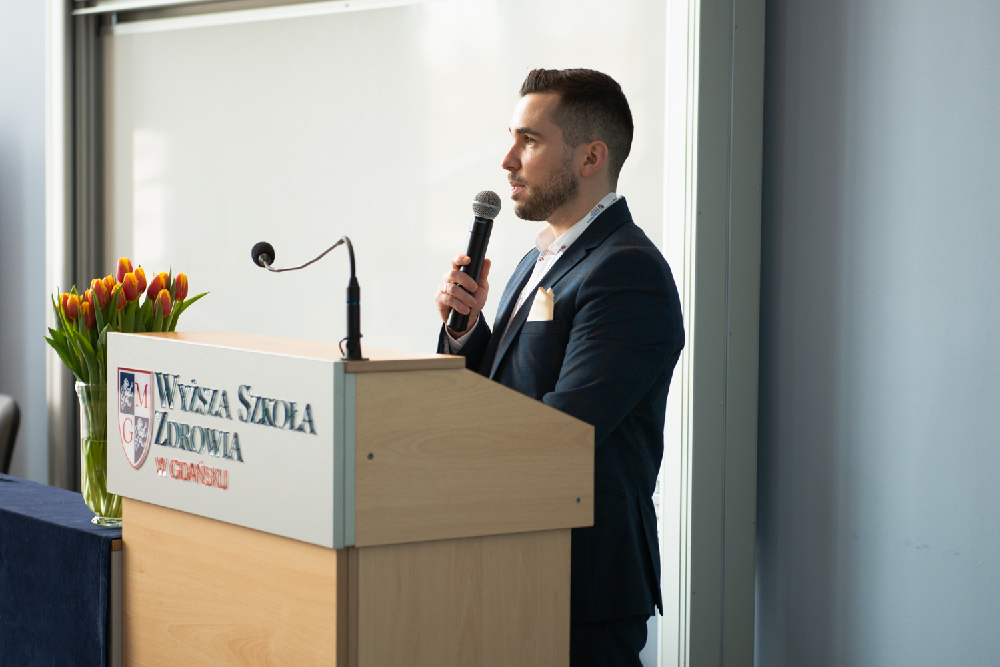

I'm Bart Wilczynski, a postdoctoral researcher at the Medical University of Gdańsk. I specialize in human movement science, with a focus on biomechanics, exercise science, and youth sport—particularly in conservative approaches to injury prevention and rehabilitation.
Looking ahead, I aim to bridge neuroscience and biomechanics to investigate the neural foundations of human motor control.
Through this website, I share my research findings, clinical insights, and open-source tools for physiotherapists and movement scientists.
I am currently on a research internship at the University of Heidelberg.

This study reveals that professional soccer players with a history of LAS experience persistent deficits in dynamic balance, despite no differences in strength or mobility between injured and non-injured legs.
Read ArticleThis review aims to consolidate existing research on the pathogenesis, clinical diagnosis, imaging outcomes, and conservative treatments of Sinding-Larsen-Johansson disease (SLJD), identifying literature gaps.
Read Article